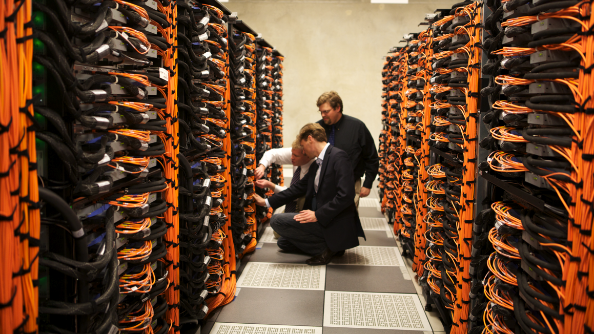

supercomputer is a computer at the frontline of contemporary processing capacity – particularly speed of calculation which can happen at speeds of nanoseconds.
				Supercomputers were introduced in the 1960s, made initially and, for decades, primarily by Seymour Cray at Control Data Corporation (CDC), Cray Research and subsequent companies bearing his name or monogram. While the supercomputers of the 1970s used only a few processors, in the 1990s machines with thousands of processors began to appear and, by the end of the 20th century, massively parallel supercomputers with tens of thousands of "off-the-shelf" processors were the norm.[2][3] As of November 2013, China's Tianhe-2 supercomputer is the fastest in the world at 33.86 petaFLOPS, or 33.86 quadrillion floating point operations per second.
				Systems with massive numbers of processors generally take one of two paths: In one approach (e.g., in distributed computing),<aside style = "float: right;"> </aside> a large number of discrete computers (e.g., laptops) distributed across a network (e.g., the internet) devote some or all of their time to solving a common problem; each individual computer (client) receives and completes many small tasks, reporting the results to a central server which integrates the task results from all the clients into the overall solution.[4][5] In another approach, a large number of dedicated processors are placed in close proximity to each other (e.g. in a computer cluster); this saves considerable time moving data around and makes it possible for the processors to work together (rather than on separate tasks), for example in mesh and hypercube architectures.
				The use of multi-core processors combined with centralization is an emerging trend; one can think of this as a small cluster (the multicore processor in a smartphone, tablet, laptop, etc.) that both depends upon and contributes to the cloud.[6][7]
				Supercomputers play an important role in the field of computational science, and are used for a wide range of computationally intensive tasks in various fields, including quantum mechanics, weather forecasting, climate research, oil and gas exploration, molecular modeling (computing the structures and properties of chemical compounds, biologicalmacromolecules, polymers, and crystals), and physical simulations (such as simulations of the early moments of the universe, airplane and spacecraft aerodynamics, the detonation of nuclear weapons, and nuclear fusion). Throughout their history, they have been essential in the field of cryptanalysis.[8]
				